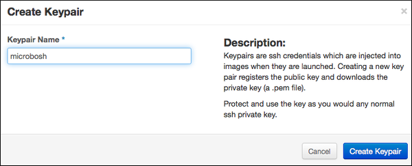
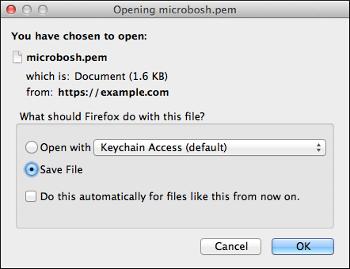
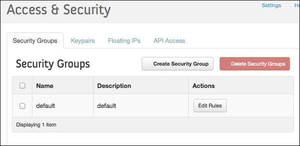
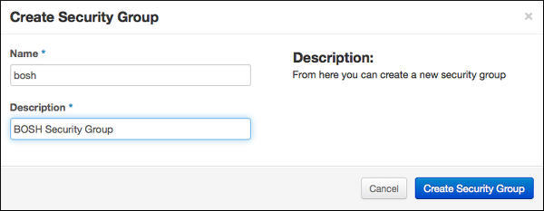
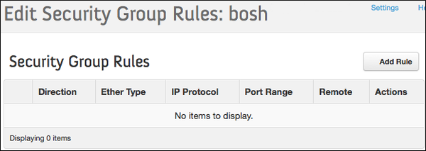
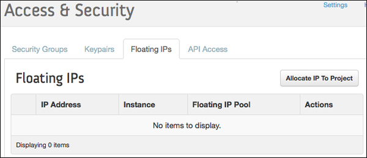
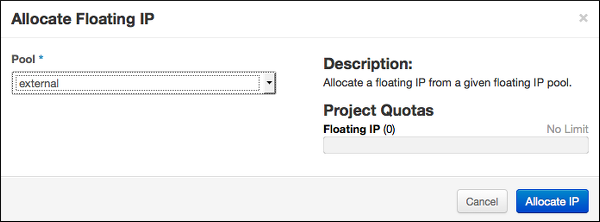
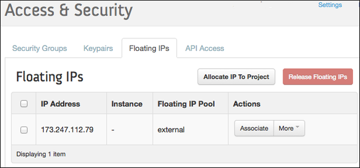

OpenStack
This document shows how to initialize new environment on OpenStack.
Step 1: Prepare an OpenStack environment¶
Prerequisites¶
-
An OpenStack environment running one of the following supported releases:
Note: Juno has a bug that prevents BOSH to assign specific IPs to VMs. You have to apply a Nova patch to avoid this problem.
-
The following OpenStack services:
- Identity: BOSH authenticates credentials and retrieves the endpoint URLs for other OpenStack services.
- Compute: BOSH boots new VMs, assigns floating IPs to VMs, and creates and attaches volumes to VMs.
- Image: BOSH stores stemcells using the Image service.
- (Optional) OpenStack Networking: Provides network scaling and automated management functions that are useful when deploying complex distributed systems. Note: OpenStack networking is used as default as of v28 of the OpenStack CPI. To disable the use of the OpenStack Networking project, see using nova-networking.
-
The following OpenStack networks:
- An external network with a subnet.
- An private network with a subnet. The subnet must have an IP address allocation pool.
-
Configuration of a new OpenStack Project
-
Automated configuration
You can use a Terraform enviroment template to configure your OpenStack project.
-
Manual configuration
Note: See the OpenStack documentation for help finding more information.
Alternatively, you can do the following things manually as described below: * Create a Keypair. * Create and configure Security Groups. * Allocate a floating IP address.
-
Create a Keypair¶
-
Select Access & Security from the left navigation panel.
-
Select the Keypairs tab.

-
Click Create Keypair.
-
Name the Keypair "bosh" and click Create Keypair.

-
Save the
bosh.pemfile to~/Downloads/bosh.pem.
Create and Configure Security Groups¶
You must create and configure two Security Groups to restrict incoming network traffic to the BOSH VMs.
BOSH Security Group¶
-
Select Access & Security from the left navigation panel.
-
Select the Security Groups tab.

-
Click Create Security Group.
-
Name the security group "bosh" and add the description "BOSH Security Group"

-
Click Create Security Group.
-
Select the BOSH Security Group and click Edit Rules.
-
Click Add Rule.

-
Add the following rules to the BOSH Security Group:
Note: It highly discouraged to run any production environment with
0.0.0.0/0source or to make any BOSH management ports publicly accessible.Direction Ether Type IP Protocol Port Range Remote Purpose Ingress IPv4 TCP 22 0.0.0.0/0 (CIDR) SSH access from CLI Ingress IPv4 TCP 6868 0.0.0.0/0 (CIDR) BOSH Agent access from CLI Ingress IPv4 TCP 25555 0.0.0.0/0 (CIDR) BOSH Director access from CLI Egress IPv4 Any - 0.0.0.0/0 (CIDR) Egress IPv6 Any - ::/0 (CIDR) Ingress IPv4 TCP 1-65535 bosh Management and data access
Allocate a floating IP address¶
-
Select Access & Security from the left navigation panel.
-
Select the Floating IPs tab.

-
Click Allocate IP to Project.
-
Select External from the Pool dropdown menu.
-
Click Allocate IP.

-
Replace
FLOATING-IPin your deployment manifest with the allocated Floating IP Address.
Step 2: Deploy¶
-
Install CLI v2.
-
Use
bosh create-envcommand to deploy the Director.# Create directory to keep state $ mkdir bosh-1 && cd bosh-1 # Clone Director templates $ git clone https://github.com/cloudfoundry/bosh-deployment # Fill below variables (replace example values) and deploy the Director $ bosh create-env bosh-deployment/bosh.yml \ --state=state.json \ --vars-store=creds.yml \ -o bosh-deployment/openstack/cpi.yml \ -v director_name=bosh-1 \ -v internal_cidr=10.0.0.0/24 \ -v internal_gw=10.0.0.1 \ -v internal_ip=10.0.0.6 \ -v auth_url=test \ -v az=test \ -v default_key_name=test \ -v default_security_groups=[test] \ -v net_id=test \ -v openstack_password=test \ -v openstack_username=test \ -v openstack_domain=test \ -v openstack_project=test \ -v private_key=test \ -v region=test
If running above commands outside of an OpenStack network, refer to Exposing environment on a public IP for additional CLI flags.
See OpenStack CPI errors for list of common errors and resolutions.
-
Connect to the Director.
# Configure local alias $ bosh alias-env bosh-1 -e 10.0.0.6 --ca-cert <(bosh int ./creds.yml --path /director_ssl/ca) # Log in to the Director $ export BOSH_CLIENT=admin $ export BOSH_CLIENT_SECRET=`bosh int ./creds.yml --path /admin_password` # Query the Director for more info $ bosh -e bosh-1 env
-
Save the deployment state files left in your deployment directory
bosh-1so you can later update/delete your Director. See Deployment state for details.
Previous: Create an environment